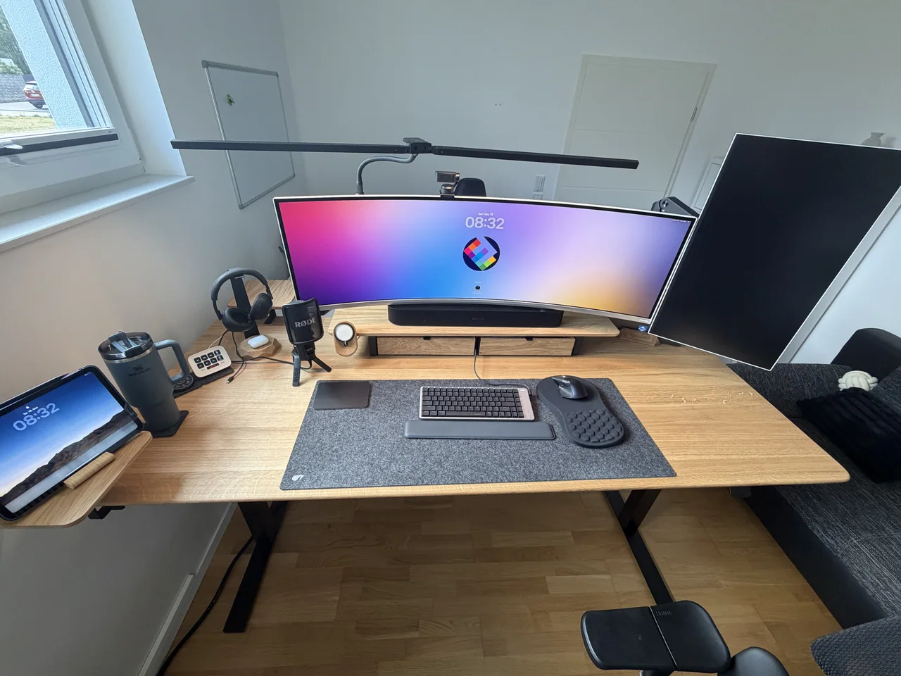
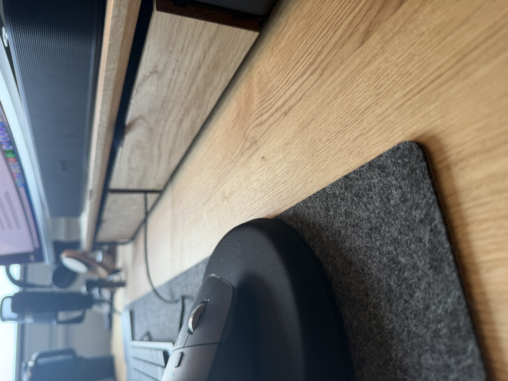
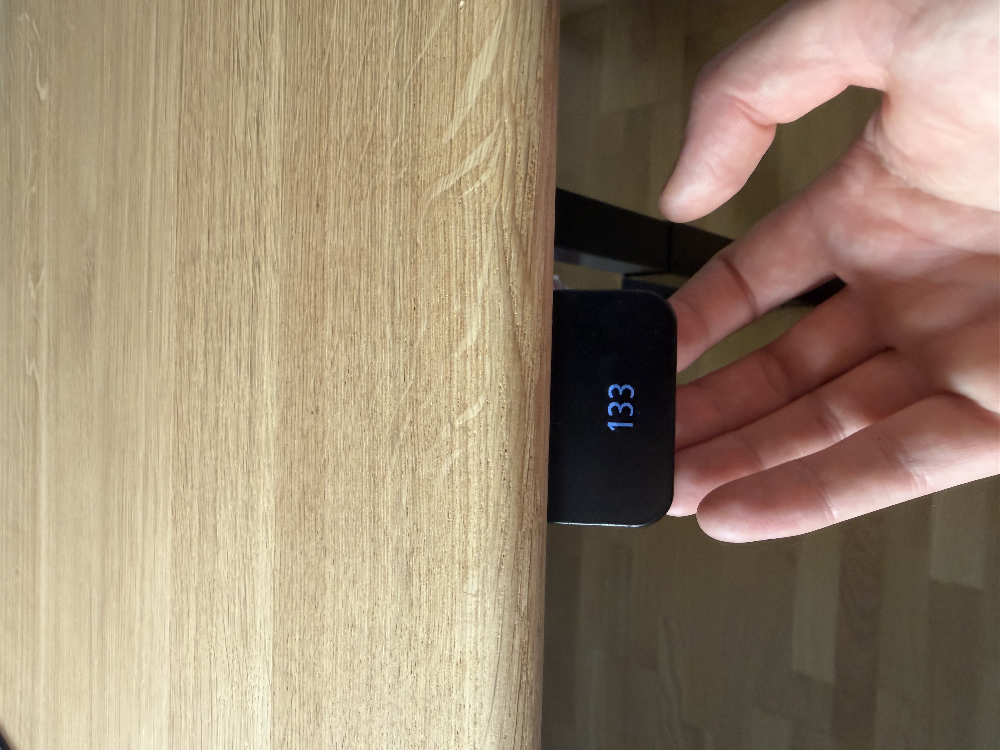
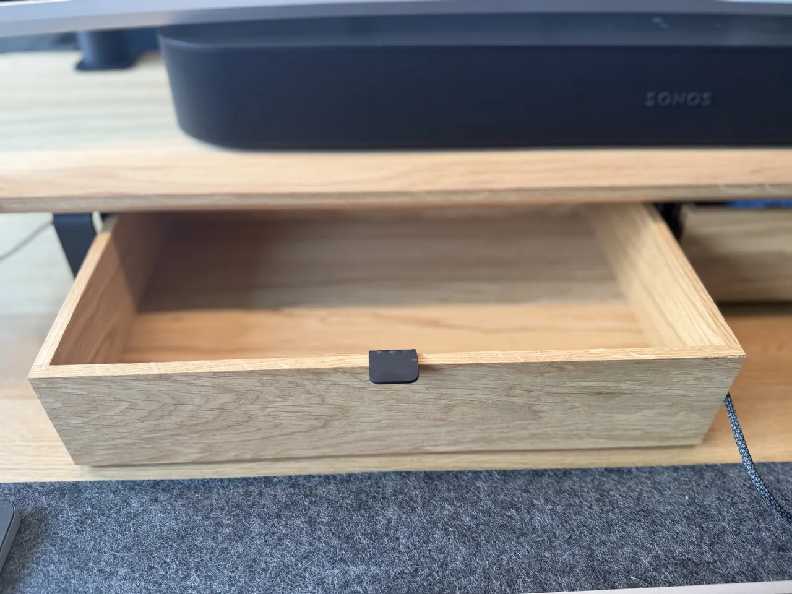
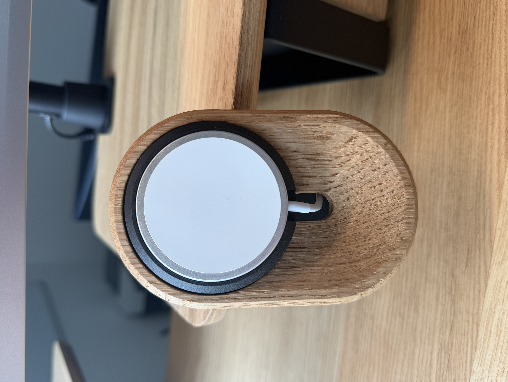
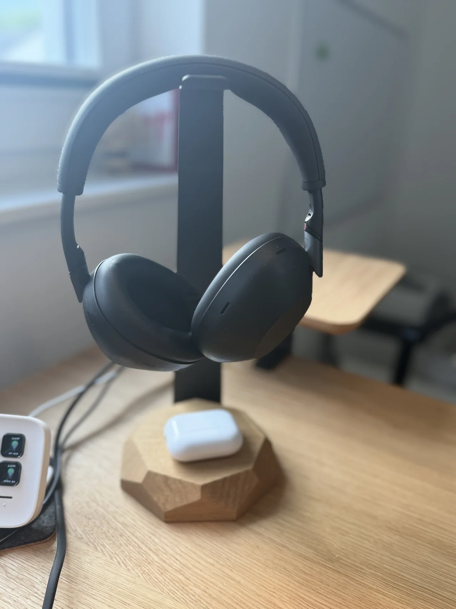
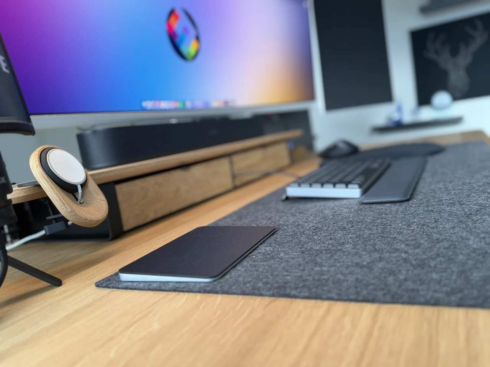

My New Setup: Why the Oakywood Standing Desk Pro Has Actually Made Me More Productive
Advertisement. Oakywood provided the desk and accessories as part of a paid content partnership; this post contains advertising and may include affiliate links. Everything here is still 100% my own experience.
Iâve been using the Oakywood Standing Desk Pro as the centerpiece of my setup daily for several weeks now, and this review collects everything Iâve learned so far.
Iâll be honest: I spend a huge portion of my life at a desk. Coding sessions for Frontier Engine, slide decks for conferences, podcast recordings, writing on this blog,⦠all of it happens on a surface of roughly 1.4 by 0.7 meters. My old desk was functional, but at some point it hit me: the piece of furniture I spend 70+ hours a week at probably deserves to be more than just âfunctional.â
Thatâs where Oakywood came in.

Why I Chose the Oakywood Standing Desk Pro
I spent a while looking at the market beforehand. There are cheap height-adjustable desks starting at â¬300, thereâs the ergonomic mid-tier, and then thereâs a small handful of vendors playing in a completely different league. Oakywood is clearly the latter and thatâs not me exaggerating. The Oakywood Standing Desk Pro sits firmly at the top of that league.
Three things convinced me to pick the Oakywood Standing Desk Pro:
- Made-to-order in Poland. Every desk is handcrafted in Ciche after the order comes in. The lead time is seven to eight weeks long, but thatâs actually the point. Nothing here is mass-produced on stock. I ordered my desk in a extra lage size.
- Solid FSC-certified wood instead of laminated particleboard. For a piece of furniture thatâs supposed to last 10+ years, this makes a massive difference.
- The LINAK frame from the EU. In the office furniture world, LINAK is basically the gold standard for lifting columns. Red Dot Design Award for the control panel, twin motors with 1200 N and 60 mm/s lift speed, these are outstanding specs.

Unboxing and Assembly of the Oakywood Standing Desk Pro
What I didnât expect: assembling the Oakywood Standing Desk Pro genuinely takes about ten minutes. Oakywood uses a system called âClick-on Feetâ and âKick & Clickâ where the legs snap into place without much screwing around. Iâve assembled IKEA side tables that took longer.
The tabletop itself is stunning. Oak, finished with OSMO Topoil a natural wax oil that leaves the woodâs pores open. This has two effects: visually, the grain looks noticeably more present and alive than with lacquered surfaces, and tactilely, the surface actually feels like wood, not sealed plastic imitation. The trade-off: you have to do some maintenance every 6â12 months (Oakywood sells a dedicated maintenance kit for that), and water marks can leave traces if youâre careless. Acceptable for me â I want this wood to age.
The LINAK Control Panel â Small Lever, Big Difference
This sounds like a minor detail, but itâs actually the thing that has shifted my daily routine the most. With my old desk, I had to press buttons and wait until the height was right. With the Oakywood Standing Desk Pro, I lift the lever briefly desk goes up â or push it down â desk goes down. Double-tap activates one of four saved presets. The display in the middle of the lever shows the exact height.
Sounds minimal, but itâs exactly what makes the difference between âin theory I could switch positions more oftenâ and âI just switch.â The friction is so low that I actually transition between sitting and standing four or five times a day.
On top of that, thereâs the Desk Connect app, which sends reminders if youâve been in one position too long. Sounds annoying, but itâs unobtrusive enough not to break flow â and honestly, sometimes I need exactly that nudge.

And Now the Productivity Bit â Is It Actually Real?
I was skeptical at first. Ergonomics promises often sound like marketing, and âstanding desks make you more productiveâ is exactly the kind of claim where, as a tech person, you immediately want to see the sources.
Turns out, they exist. Mount Sinai School of Medicine published a twelve-month study in 2018 comparing height-adjustable workstations to traditional desks. The results are pretty clear: 65% of participants with height-adjustable desks reported increased productivity and better concentration after one year. 47% reported a significant reduction in upper back, shoulder, and neck discomfort. Thatâs not selective perception over two weeks â thatâs a year of observed behavior, and it matches what I feel with this desk.
A study published in the British Medical Journal additionally shows that sit/stand desk users report improved job performance, higher work engagement, and less occupational fatigue compared to a control group. And research in IIE Transactions on Occupational Ergonomics suggests that the reduction in physical and mental fatigue correlates directly with higher productivity.
What I observe in myself lines up pretty closely:
- Less afternoon slump. If I switch to standing around 2 p.m., I donât drop into that dull hole I used to reliably experience between 2 and 4.
- Better focus phases while coding. Sounds weird, but when Iâm working through a complex refactoring task, it actually helps me to stand while thinking. Itâs almost a physical signal to my brain: âThis matters now.â
- Conference calls while standing are just better. More energy in my voice, more present body language â and the people on the other end of the call notice it too.
Important context: a standing desk isnât a miracle cure. The productivity gains are more indirect â the Oakywood Standing Desk Pro reduces distractions from pain and boosts energy through better circulation, which then allows for more focused work. Working standing all day isnât a win either. The point is the switching â and thatâs exactly what the Pro makes so frictionless that you actually do it.
The Accessories: Modular Drawers, Felt Trays, and the MagSafe Puck
The desk alone would already make a statement, but Oakywood really shines as a system. I added a few modules to the setup:
Modular Drawer Organizers. Two drawers mounted under the desk. Sounds boring at first, but this is actually the detail that pushed my setup from âtidyâ to âclean.â Pens, small cables, webcam covers, notebooks â all off the desk surface, but instantly accessible.

Felt trays. Small trays made of felt for keys, AirPods, wallet â the kind of stuff that otherwise gets scattered across the desk surface. The material switch from wood to felt is one of those design decisions you only appreciate once you have it: visually itâs a break that brings a sense of calm to the setup.
MagSafe puck. My iPhone now charges unobtrusively at the edge of the desk, no Lightning cable lying around, no plastic stand. Small thing, but for a setup you look at every day, it isnât trivial.

Sustainability â Not Just Marketing Garnish
One point that matters to me and I donât want to skip: Oakywood does substantially more on sustainability than most in the industry. The wood is FSC-certified, the OSMO wax oil finish is significantly more environmentally friendly than lacquers, and Oakywood partners with organizations like One Tree Planted and Forever Forest â a portion of the profit from every product flows into reforestation projects.
I was cautious about claims like this at first â âsustainableâ gets thrown around inflationarily. But if this desk can last seventy years (and thatâs realistic for solid wood with a proper frame), then the ecological footprint per year of use is just considerably better than for a â¬400 desk that ends up at the dump after five years.

Whatâs Not Perfect (Because Iâm Not Writing an Ad)
To keep this post honest, a few things worth mentioning.
- The delivery wasnât drama-free. Two of the modular drawers got lost in transit, and the MagSafe puck arrived broken. Oakywoodâs support (especially Marta) sorted it within 24 hours and confirmed a replacement shipment immediately. Thatâs not a knock on Oakywood, more on the carrier â but I wanted to mention it transparently.
- Solid wood needs care. If you want a desk you wipe with a wet cloth and call it done, this isnât it. For me, an oiling session is on the schedule every few months.
- The price. This isnât a bargain desk. But if youâre someone who replaces desks every three to five years, you often end up paying more in the long run.
Verdict on the Oakywood Standing Desk Pro After Several Weeks
I think the most honest indicator of a good product is whether you eventually stop thinking about it. My first standing desk was a âfeatureâ I had to think about often â limited height range, awkward controls, mediocre looks. The Oakywood Standing Desk Pro just disappears into my daily routine. It works, it looks great, itâs quiet, itâs stable â and I actually use the standing function, which by the end of my old deskâs life almost never happened anymore.
Considering that I spend significantly more time at this piece of furniture than I do in any chair, on any couch, or even in my bed â the Oakywood Standing Desk Pro is an investment that feels right.

Disclosure: This content partnership with Oakywood runs over the coming months. If you have any questions about the setup, configuration, or my experience, feel free to reach out.
A new blog post will follow where I walk through the rest of my equipment â in the meantime, you can read more of my other posts here.